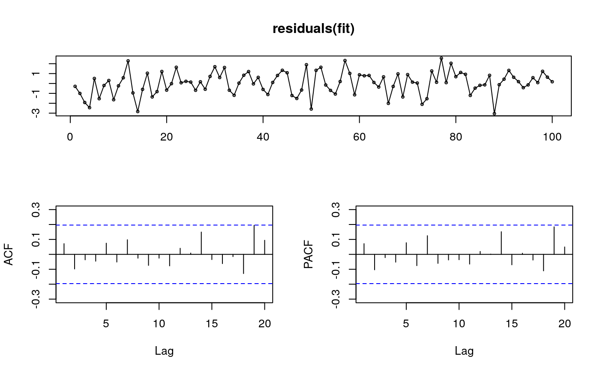

R/arfima.R
An ARFIMA(p,d,q) model is selected and estimated automatically using the Hyndman-Khandakar (2008) algorithm to select p and q and the Haslett and Raftery (1989) algorithm to estimate the parameters including d.
arfima(y, drange = c(0, 0.5), estim = c("mle", "ls"), model = NULL, lambda = NULL, biasadj = FALSE, x = y, ...)
| y | a univariate time series (numeric vector). |
|---|---|
| drange | Allowable values of d to be considered. Default of
|
| estim | If |
| model | Output from a previous call to |
| lambda | Box-Cox transformation parameter. If |
| biasadj | Use adjusted back-transformed mean for Box-Cox transformations. If transformed data is used to produce forecasts and fitted values, a regular back transformation will result in median forecasts. If biasadj is TRUE, an adjustment will be made to produce mean forecasts and fitted values. |
| x | Deprecated. Included for backwards compatibility. |
| … | Other arguments passed to |
A list object of S3 class "fracdiff", which is described in
the fracdiff documentation. A few additional objects
are added to the list including x (the original time series), and the
residuals and fitted values.
This function combines fracdiff and
auto.arima to automatically select and estimate an ARFIMA
model. The fractional differencing parameter is chosen first assuming an
ARFIMA(2,d,0) model. Then the data are fractionally differenced using the
estimated d and an ARMA model is selected for the resulting time series
using auto.arima. Finally, the full ARFIMA(p,d,q) model is
re-estimated using fracdiff. If estim=="mle",
the ARMA coefficients are refined using arima.
J. Haslett and A. E. Raftery (1989) Space-time Modelling with Long-memory Dependence: Assessing Ireland's Wind Power Resource (with discussion); Applied Statistics 38, 1-50.
Hyndman, R.J. and Khandakar, Y. (2008) "Automatic time series forecasting: The forecast package for R", Journal of Statistical Software, 26(3).
fracdiff, auto.arima,
forecast.fracdiff.
library(fracdiff) x <- fracdiff.sim( 100, ma=-.4, d=.3)$series fit <- arfima(x) tsdisplay(residuals(fit))